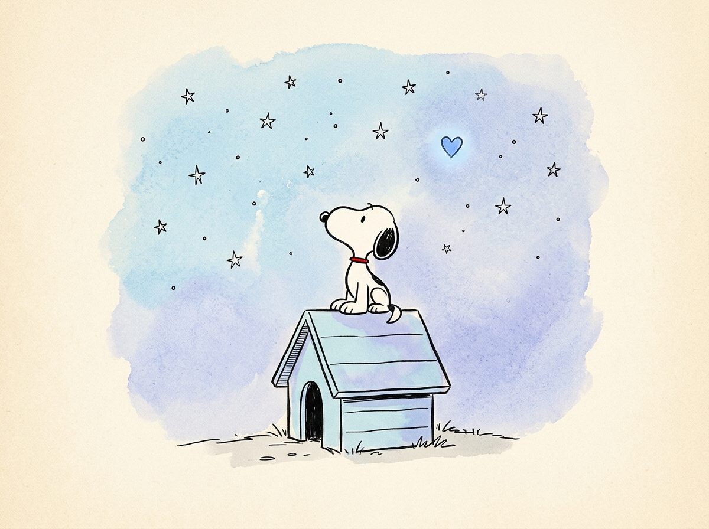
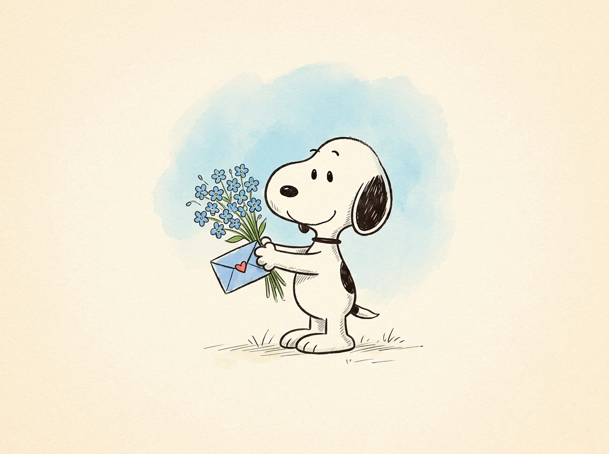

TENTANG KAMU, JASMINE
Keharuman Melati & Kisah Hangat yang Tertulis Untukmu
✦
"Ada beberapa hal yang terlalu berharga kalau cuma diucapkan lewat chat singkat..."
Jadi kubuatkan buku kecil bernuansa merah jambu ini—ditemani Snoopy yang setia, secangkir kehangatan, dan lembaran sederhana tentang kita.
"Buka setiap lembarnya dengan santai ya... semoga senyummu selalu merekah di setiap halamannya."
Adu Rayu
Yovie Widianto · Tulus · Glenn Fredly
"Lagu yang paling pas buat nemenin kamu membaca buku kecil ini..."
Wajah yang selalu berhasil bikin hariku mendadak jauh lebih cerah 🌸
Senyuman yang selalu bikin tenang 🌸
"Di antara jutaan hal yang ada di dunia maya, foto dan senyum manismu ini yang selalu paling aku tunggu, Jasmine. Sederhana, tapi magisnya nyata banget bikin hati adem."
"kalau pada akhir aku hanya bisa mengagumimu dari jauh setidaknya terimakasih kepada semesta karena pernah mengizinkanku mengenal seseorang sejosjis kamu. jangan jadi orang bingung, ya? aku tidak tahu harus membaca sikapmu sebagai apa kadang kamu terasa begitu dekat lalu esoknya seperti tidak pernah mengenalku sedangkan aku, sudah terlanjur mengagumi lebih dari yang seharusnya."
"Sebenarnya tiap kali notifikasi chat darimu masuk, jantungku selalu salah tingkah sendiri..."
Satu Pengakuan Tulus Dari Lubuk Hati
hai, maaf kalo ini kedengeran random dan konyol, tapi to be honest aku suka banget sama kamu. sebenernya aku udah merhatiin kamu dari lama, jauh sebelum kita kenal, cuma waktu itu belum berani make a move atau sekadar follow duluan hehe.
I genuinely admire kepinteran dan vibe kamu, you're literally my dream girl. aku deketin kamu bukan buat main-main atau sekadar penasaran, I'm being completely sincere here.
Aku sadar chances-nya kecil karena kita baru banget deket, jadi aku ngga naruh ekspektasi apa-apa. aku cuma pengen ngungkapin aja biar perasaan aku lebih lega aja. my bad kalau selama ini aku kesannya ngechatin kamu terus atau mungkin bikin kamu uncomfortable.
kalau setelah chat ini kamu milih buat keep distance atau bersikap asing, its okay kok... yang penting aku udah gentleman buat jujur soal perasaan aku ke kamu.

PEANUTS ARCHIVE
"Terima kasih sudah membaca sampai lembar terakhir. Semoga kita bisa segera ketemu dan bikin cerita indah bareng. 🌸"